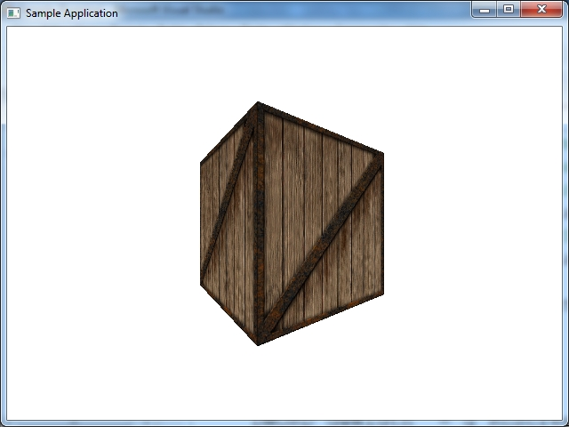
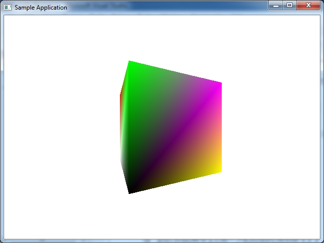

Загрузить исходный код примера на С++, DirectX SDK 6.1, для Visual Studio 2005 WinAPI можно ЗДЕСЬ.
Данные примеры для DirectX 6.1 разрабатывались на Visual Stduio 2005 WinAPI, с использованием DirectX 6.1 SDK.
Кроме того данные примеры успешно компилировались на Visual Studio 2019 и Windows 10 SDK (без DirectX 6.1).
 Пример для Visual Studio 2005 WinAPI, DirectX 6.0 Direct3D3 Device, создаем текстуру из изображения BMP 24 бита глубина цвета, и при помощи GetDC() и BitBlt() копируем изображение BMP в нашу текстуру, которую накладываем на треугольник. В этом примере мы создаем полноценный указатель на текстуру LPDIRECT3DTEXTURE2, в отличии от того что Direct3D2 вместо указателя на текстуру получаем так называемый Texture Handler. Пример без использования индексного буфера.
Пример для Visual Studio 2005 WinAPI. Пример аналогичный предыдущему, вместо треугольника на экране вращающийся куб. Куб вращается на экране вокруг оси Y. Пример рендеринга с использованием индексного буфера. Создаем текстуру для куба при помощи GetDC() и BitBlt(). Создаем текстуру из изображения BMP 24 бита глубина цвета.
Пример для Visual Studio 2005 WinAPI. То же самое что и предыдущий пример, только вершины умножаются на матрицы, это software rendering проект, есть функция умножения вершин куба на матрицы мира, вида, проекции. Отрисовка экранных координат куба (треугольников) возложена на DirectX 6.0. Пример рендеринга с использованием индексного буфера. Создаем текстуру для куба при помощи GetDC() и BitBlt(). Создаем текстуру из изображения BMP 24 бита глубина цвета. Этот метод программирования (программный расчет вершин модели, рисование треугольников с помощью DirectX 6.0) использовался в компьютерной игре Tomb Raider 3, которая создавалсь в 1998 году.
Пример для Visual Studio 2005 WinAPI. То же самое что и предыдущий пример, только добавлен Z буффер.
Пример для Visual Studio 2005 WinAPI. То же самое что и предыдущий пример, только по другому создается изображение текстуры- изображение текстуры копируется в поверхность при помощи Lock() функции.
То же что и предыдущее только загружается текстура из изображения BMP с глубиной цвета 8 бит.
Пример аналогичный предыдущим, Direct3D3. Отличие что в приложении создается цветной куб, а не текстурированный куб.
Теперь мы используем Direct3D2. Создаем текстуру и получаем ее Texture Handler. Затем устанавливаем этот Texutre Handler перед отображением куба. В приложении на экране вращается текстурированный куб. Создаем текстуру из изображения BMP 24 бита глубина цвета.
То же что и предыдущий пример (мы перешли на Direct3D2). Дополнение - создание Z буффера для приложения. Создаем текстуру из изображения BMP 24 бита глубина цвета.